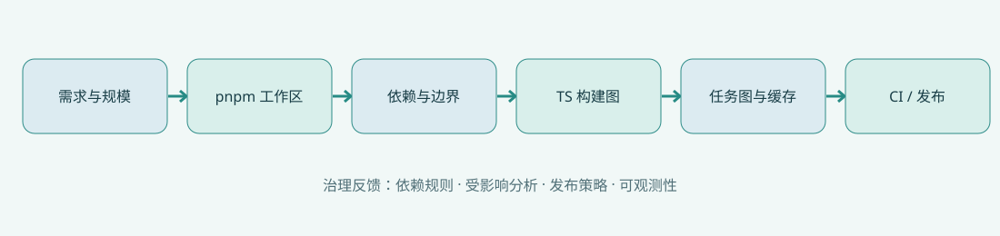

先看全景，再钻进去
这张图描述从仓库需求到治理闭环的主路径。Mermaid 源码与离线 SVG 同时保留，避免因为图表服务不可用而空白。

展开 Mermaid 源码
flowchart LR N0["现实痛点 依赖不清晰"] N1["pnpm Workspace 本地依赖显式"] N2["包依赖图 声明与边界"] N3["TS References 类型构建图"] N4["任务图 / 缓存 输入输出约束"] N5["Affected 变更传播"] N6["Rush / Nx / Turbo 治理选型"] N7["CI / 发布 证据与审计"] N0 --> N1 N1 --> N2 N2 --> N3 N3 --> N4 N4 --> N5 N5 --> N6 N6 --> N7
十个单元，一条工程证据链
每章有独立 Markdown、可视化机制图、工程片段、故障推演、诊断题与官方链接。
先有依赖图，才有 Monorepo
从单仓目录堆砌到可验证的架构图
阅读与验证 →UNIT 02 · THEORYpnpm Workspace：严格依赖是怎么形成的
workspace:、幽灵依赖、符号链接与安装布局
阅读与验证 →UNIT 03 · THEORYTypeScript Project References 的真正边界
声明产物、复合项目、增量构建与编辑器体验
阅读与验证 →UNIT 04 · THEORY包入口：types、exports 与跨端条件导出
把公共 API 做成可执行边界，而不是文件夹约定
阅读与验证 →UNIT 05 · THEORY任务图、增量构建与缓存键
什么可以缓存，什么必须重新执行
阅读与验证 →UNIT 06 · THEORYAffected：从文件变更到任务的精确传播
反向依赖闭包、Git 基准和 Nx 24 任务级判定
阅读与验证 →UNIT 07 · THEORYRush 治理：从单仓编排到组织契约
发布变更文件、严格版本策略与构建缓存
阅读与验证 →UNIT 08 · THEORY工具选型：pnpm、Turbo、Nx、Rush
把宣传指标转成可验证的决策矩阵
阅读与验证 →UNIT 09 · THEORYReact + React Native + NestJS 的跨端边界
共享模型不等于共享运行时
阅读与验证 →UNIT 10 · THEORY从代码治理到 AI Agent 的单仓闭环
边界检查、Spec Drift、证据图与发布审计
阅读与验证 →四份可执行的排障手册
从故障证据到修复策略，再到 CI 验收；重点讨论「为什么会错」以及「如何证明修好了」。
幽灵依赖取证：为什么本机能跑、CI 却失败
从 import → package.json → node_modules → lockfile → bundler 查找真正的依赖边界
深入排障 →PRACTICAL HANDBOOKNx 24 任务级 Affected 迁移实战
区分图结构变化、输入命中、执行前置条件和迁移旧配置
深入排障 →PRACTICAL HANDBOOKRush 治理落地：什么时候值得引入
发布策略、变更文件、构建缓存、安全边界和退出机制
深入排障 →PRACTICAL HANDBOOK跨端 Monorepo：React、RN 与 NestJS 排障清单
TypeScript 共享逻辑、Metro exports、Node 运行时与服务端独立验证
深入排障 →不要只读配置，亲手验证
三组完全在浏览器端执行的教学模拟，不需要后端；每个结论都说明了与真实工具实现的边界。
把依赖图变成真正的代码
五个工作区包，TypeScript Project References，真实 Node 测试，独立演示 affected。
本专题从历史学习讨论与公开技术文档重新编写，不是逐字聊天记录。关于 Nx 24 的 task-based affected、pnpm 的过滤选择器及 Rush 构建/发布，使用 2026-10-30 可检索到的官方文档校核；对运行时和集成的正确性仍要以具体项目的测试结果为准。
Nx 24 官方说明 · pnpm Filtering · Rush Build Cache